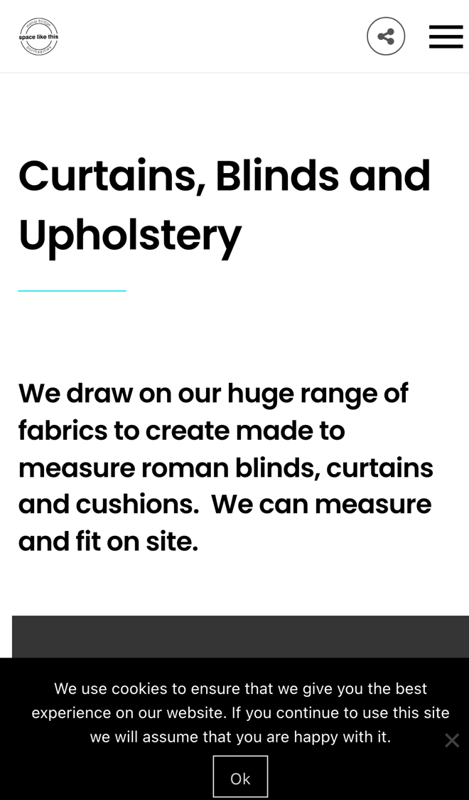
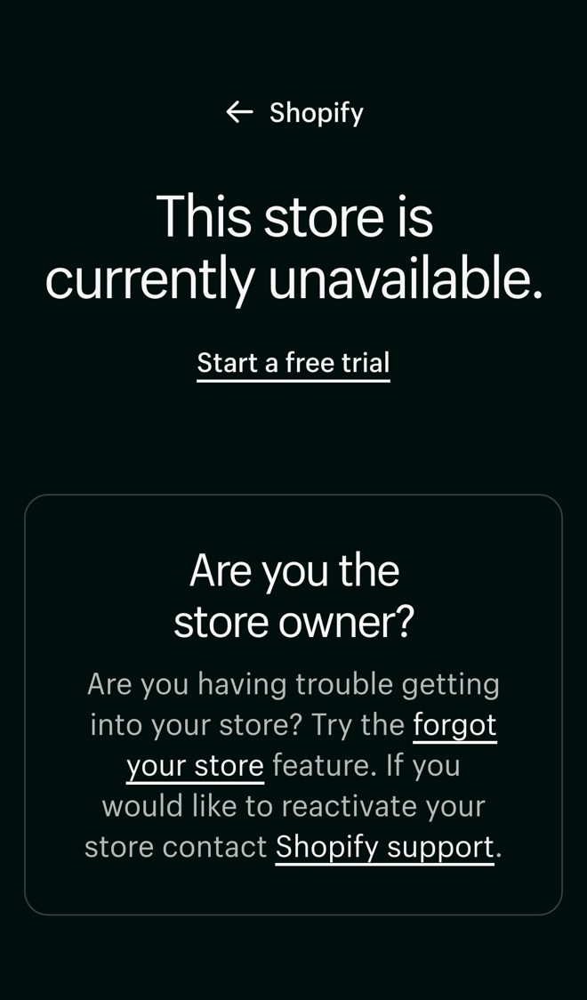

Space Like This: from enquiry to measured and booked
I went through your website on a phone, the way someone wanting new blinds or help with a room would, and read your curtains and blinds, shop, about and contact pages. Your projects show your work off beautifully. Where I think you'd win more orders, and save time, is how someone gets from looking to booking.
What's already working
Three things I'd change
Show a guide price for blinds
Your page says "We draw on our huge range of fabrics to create made to measure roman blinds, curtains and cushions. We can measure and fit on site." The enquiry form asks for a name, email, subject and message, and the site shows no prices.

Someone pricing up blinds in the evening wants a rough figure before they commit to a visit. Without one, many put it off or ask somewhere that shows a price.
- They choose curtains or a roman blind, enter the rough width and drop of the window and pick a fabric price band.
- They see a guide price range straight away, from your own prices, and can book a measuring visit.
- You get the sizes, the room and their fabric ideas before you go.
Book consultations and measures online
Your shop page says "we can talk you through projects and arrange a consultation", and your about page says "You can usually catch Mandy in the shop on Wednesdays and Fridays." Nothing on the site lets someone book a time.
Finding a time by phone or email can take several messages, and someone who calls in on the wrong day misses you.
- A calendar shows your consultation slots, in the shop or at their home.
- They pick one, say what the project is and add photos of the room.
- It goes in your diary, and they get a reminder the day before.
Take orders online again
The "Online Shop" link in your menu opens a page that says "This store is currently unavailable." Your shop page says it is "filled with our favourite homewares and gifts".

Anyone who follows that link to buy a gift leaves without ordering, and people who can't get to Menai Bridge have no way to buy from you.
- A simple order page shows a few of your best homewares and gifts, with photos and prices.
- They pay by card and choose collection from the shop or delivery.
- You get a message for each order, with what to pack and where it's going.
Your website, answering for you
An assistant that answers the questions you get asked again and again, at any hour. These answers come only from your own website: your curtains and blinds page, your shop page and your about page.
Anything it can't answer, it passes to you with the customer's details.
What happens next
For five local businesses I'm setting up one of these for free, in return for an honest review. Pick whichever would help most.
I'm Tom Williams and I run Tomoni-AI. If a 20-minute chat would help, reply to my email or give me a ring.
Call 07971 512158Email Tom